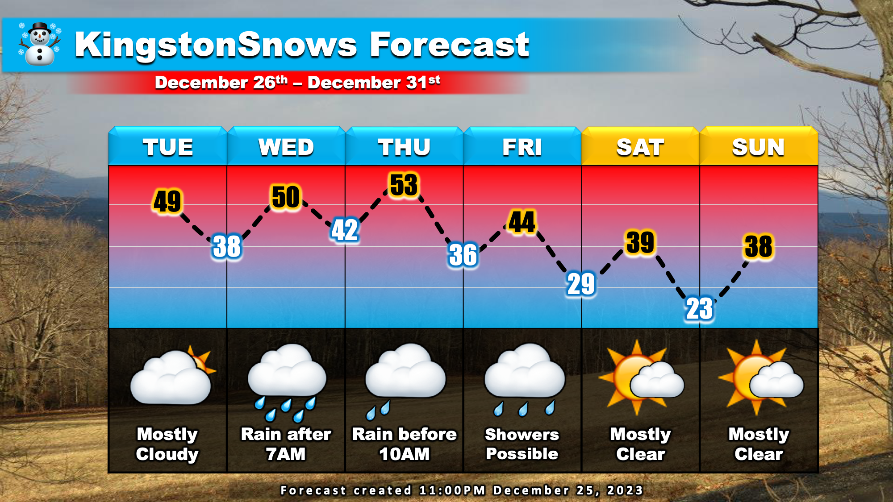
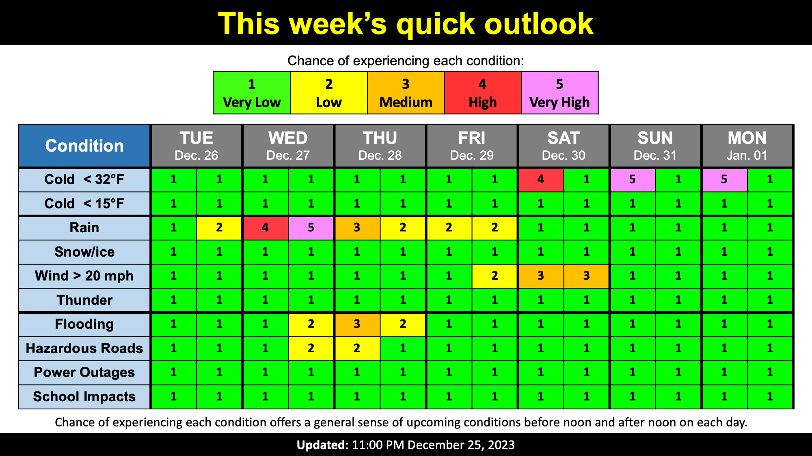

Warning: this is an old update that has been archived. This update is not current.
More rain this week
School Forecast
through Monday January 1st
Last updated: 11:30PM Monday December 25, 2023
| 0% (Nope) |
|---|
| 100% (YES!) |
|---|
| 0% (Nope) |
|---|
___________________
11:30PM Update
Hopefully everyone is having a joyous holiday season. This Christmas wasn't a snowy one here in the Hudson Valley, but we weren't alone. Across the nation, we are currently in somewhat of a snow deficit. Today, only 17% the country (excluding Alaska and Hawaii) had snow on the ground. This made today the least snowy Christmas for the United States in the past two decades. Unfortunately, the forecast continues to be more wet than white.
This week's weather will be dominated by a sprawling storm system over the central US. This is the same storm system that KingstonSnows has been monitoring since last week. The counter clockwise flow of air around the storm is currently pulling a surge of warm moist air northward along the US east coast. This plume of moisture will begin shifting into New York tomorrow. Tuesday will be overcast, but rain should hold off here in the mid-Hudson Valley for most of the day. Expect rain throughout the day on Wednesday, likely lingering into Thursday morning. Residual moisture may cause rain showers Thursday afternoon into Friday. This surge of moisture will be accompanied by unseasonally warm air with temperatures approaching 50 degrees Tuesday through Thursday. Clearer and colder weather will move in as the storm departs this weekend.

KingstonSnows continues to monitor the potential for localized flooding with this week's storm. Currently, there is the potential for up to an inch of rain Wednesday through Thursday. While this is far less than the 4.17 inches that fell in Kingston last weekend, the ground in much of Ulster and Dutchess Counties remains moist from recent rainfalls. Current analysis continues to suggest that soils in the two counties are currently at least 85% saturated. For this reason, localized pooling of water is possible, especially in areas of poor drainage. Impactful rises in area creeks and rivers, however, is not currently expected.
Next Update:
Wednesday Night
-Ethan

KingstonSnows | Kingston, New York
Website built by Ethan Burwell